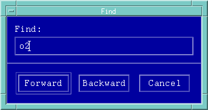

Finding things in the Test Report
This feature makes searching for text in a large test report a lot easier.
- Select Find in the Options pulldown menu. A
window similar to that of the figure below appears.

- Key in the text you want to search for, and click either Forward or
Backward to start searching.
If the text can be located, it will appear highlighted, otherwise a Text not found error message is generated.